Полное справочное руководство: функциональный и объектно-ориентированный интерфейс, компоновка, стилизация и продвинутые методы
Matplotlib исторически напоминает синтаксис среды MATLAB. Простейший способ построения графиков основан на процедурном подходе с использованием модуля pyplot: функции сами создают холст и текущие оси, если их ещё нет.
import matplotlib.pyplot as plt
import numpy as np
x = np.linspace(0, 6, 250)
y = 0.55 * x**2
plt.plot(x, y) # Построение линии по точкам x и y
plt.title("Название") # Заголовок графика
plt.xlabel("Ось X") # Подпись горизонтальной оси
plt.ylabel("Ось Y") # Подпись вертикальной оси
plt.xlim(0, 6) # Ограничение диапазона отображения оси X
plt.ylim(0, 20) # Ограничение диапазона оси Y
plt.grid(True, alpha=0.3) # Сетка
plt.savefig("plot.png", dpi=150, bbox_inches="tight") # Сохранение в файл
plt.show() # Отображение окна графика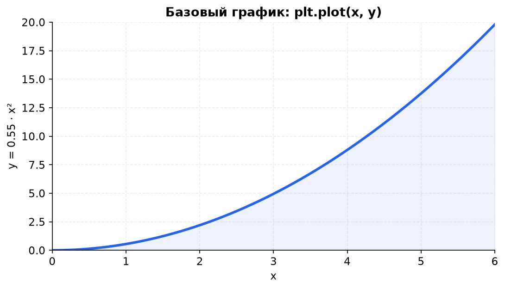
xlim/ylim.savefig() и только после этого вызывайте show(). В Jupyter show() не обязателен, но savefig() лучше вызывать до него — иначе можно получить пустой файл.
| Вызов | Что делает | Полезные параметры |
|---|---|---|
plt.plot(x, y) |
Рисует линию по парам точек. Можно передать формат-строку третьим аргументом: plt.plot(x, y, "ro--") — красные кружки и штриховая линия. |
color, lw, ls, marker, label, alpha |
plt.title() |
Заголовок текущих осей. Для общего заголовка всего холста есть fig.suptitle(). |
fontsize, fontweight, color, pad |
plt.xlim() / plt.ylim() |
Задают видимый диапазон оси. Без аргументов возвращают текущий диапазон. | plt.xlim(0, 6), plt.ylim(0, 20) |
plt.savefig() |
Сохраняет текущую фигуру в файл. Формат определяется расширением: PNG, SVG, PDF, EPS. | dpi, bbox_inches="tight", transparent, facecolor |
plt.show() |
Показывает окно с графиком. В скрипте блокирует выполнение до закрытия окна, в Jupyter выводит картинку в ячейку. | block (редко нужен) |
Процедурный интерфейс удобен для экспресс-анализа, но при тонкой настройке нескольких графиков лучше сразу переходить к объектам Figure и Axes.
В объектно-ориентированном интерфейсе вы явно создаёте холст и области графика. Это основной способ работы, когда графиков несколько или когда нужна воспроизводимая вёрстка.
Line2D, Text, Patch, Image и т. д.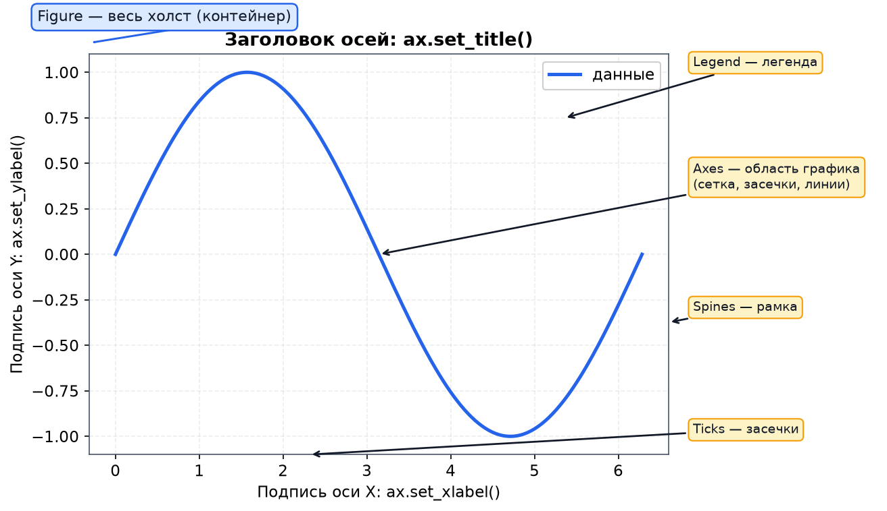
Figure — весь холст, Axes — область с системой координат, spines — рамка, ticks — засечки, legend — легенда.# figsize — размер в дюймах, dpi — точек на дюйм
fig = plt.figure(figsize=(8, 4), dpi=120)
# [отступ_слева, отступ_снизу, ширина, высота]
# значения задаются в долях от 0 до 1 относительно Figure
ax1 = fig.add_axes([0.10, 0.12, 0.82, 0.80])
x = np.linspace(0, 4 * np.pi, 600)
y = np.sin(x) * np.exp(-x / 5)
ax1.plot(x, y, color="tab:blue", lw=2)
ax1.set_title("Главный график: затухающие колебания")
ax1.set_xlabel("x")
ax1.set_ylabel("y = sin(x) · e^(−x/5)")
# Вложенный график (врезка) — те же координаты Figure
ax2 = fig.add_axes([0.23, 0.52, 0.26, 0.26])
ax2.plot(x, y, color="tab:red", lw=2)
ax2.set_xlim(0, 4.2)
ax2.set_ylim(0, 1.05)
ax2.set_title("Zoom / Врезка", fontsize=9)
ax2.set_facecolor("#fff7ed")
# bbox_inches="tight" убирает лишние поля вокруг подписей
fig.savefig("figure.png", bbox_inches="tight")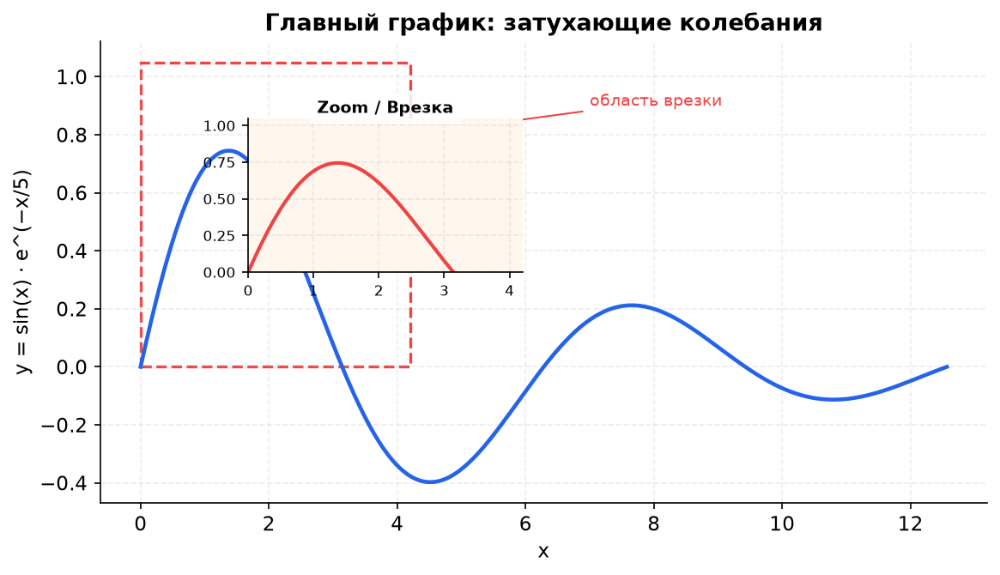
ax2 показывает увеличенную область основного графика. Красная рамка отмечает зону, которая попала во врезку.| Параметр | Смысл |
|---|---|
figsize=(w, h) | Размер холста в дюймах. При dpi=100 холст 8 × 4 дюйма даст 800 × 400 пикселей. |
dpi | Разрешение при сохранении. Для экрана хватает 100–150, для печати — 300. |
fig.add_axes([l, b, w, h]) | Добавляет оси в произвольное место. Все четыре числа — доли Figure от 0 до 1. Удобно для врезок и нестандартных макетов. |
fig.add_subplot(2, 2, 1) | Добавляет оси в ячейку регулярной сетки. Нумерация идёт слева направо, сверху вниз. |
fig.suptitle() | Общий заголовок всего холста, а не отдельной области. |
fig.tight_layout() | Автоматически подбирает отступы, чтобы подписи не наезжали друг на друга. |
plt, текущие оси можно получить как ax = plt.gca() (get current axes), а текущую фигуру — как fig = plt.gcf(). Но в новом коде лучше сразу использовать fig, ax = plt.subplots().
Функция plt.subplots() автоматически создаёт холст Figure и массив объектов Axes нужной размерности. Это самый частый способ построить несколько графиков.
# 1 строка, 2 колонки
fig, axes = plt.subplots(nrows=1, ncols=2, figsize=(10, 4))
axes[0].plot(x, y, 'b')
axes[1].plot(x, x**2, 'r')
# Двумерная сетка (2x2)
fig, axes = plt.subplots(nrows=2, ncols=2, figsize=(9, 6))
axes[0, 0].plot(x, y)
axes[0, 1].plot(x, x**2)
axes[1, 0].plot(x, x**3)
axes[1, 1].plot(x, np.sqrt(x))
fig.suptitle("Общий заголовок холста", fontsize=16) # Заголовок всей фигуры
# Вариант 1: автоматическая подгонка отступов
fig.tight_layout()
# Вариант 2: ручная регулировка (используйте вместо tight_layout)
# fig.subplots_adjust(wspace=0.3, hspace=0.3)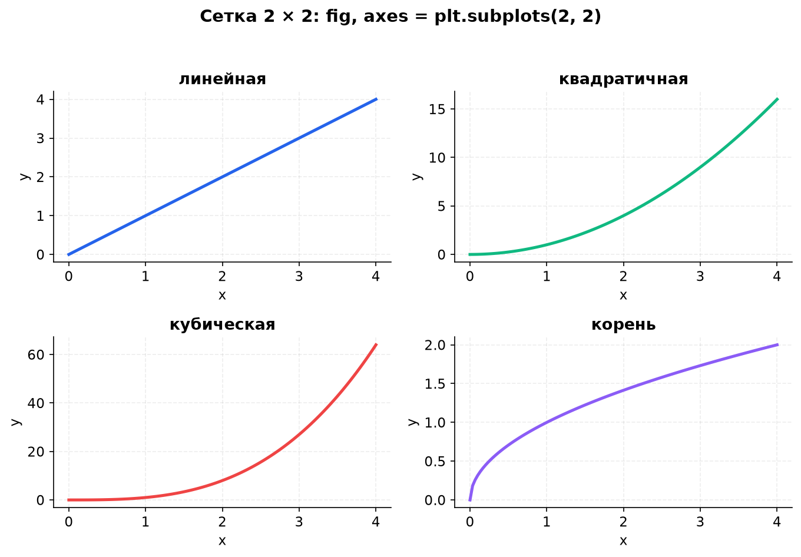
axes — двумерный массив, поэтому к панелям обращаются как axes[строка, столбец].plt.subplots()| Параметр | Что делает |
|---|---|
nrows, ncols | Число строк и столбцов сетки. По умолчанию 1 × 1. |
figsize | Размер всего холста в дюймах. |
sharex, sharey | True или "all" — общая ось для всех панелей; "row"/"col" — общая ось внутри строки/столбца. Экономит место и синхронизирует масштаб. |
squeeze | Если False, axes всегда остаётся двумерным массивом, даже при сетке 1 × 1. Удобно для универсального кода. |
constrained_layout=True | Современный аналог tight_layout(), который учитывает colorbar и suptitle. Обычно лучше ручного subplots_adjust. |
layout="constrained" | Новый синтаксис вместо constrained_layout=True (Matplotlib ≥ 3.6). |
gridspec_kw | Словарь с настройками GridSpec: {"width_ratios": [2, 1], "height_ratios": [1, 2]}. |
axes: при nrows=1, ncols=2 это одномерный массив [ax1, ax2]; при 2 × 2 — двумерный. Если сетка может быть 1 × 1, используйте axes = np.atleast_1d(axes) или squeeze=False, чтобы не ловить ошибку индексации.
Пустую ячейку можно убрать через fig.delaxes(axes[1, 1]), а объединить несколько ячеек — через GridSpec (раздел 5.6). Для циклов удобно писать for ax in axes.flat:.
Настройки оформления передаются прямо в метод plot(). Почти у каждого параметра есть короткий и полный вариант имени.
ax.plot(
x, y,
label="Эксперимент 1", # Имя для легенды
color="#10b981", # Цвет линии
lw=2.5, # linewidth: толщина линии
ls="--", # linestyle: '-', '--', '-.', ':'
marker="o", # Маркер: 'o', 's', '^', 'v', '*'
markersize=8, # ms: размер маркера
markerfacecolor="yellow", # mfc: цвет заливки маркера
markeredgewidth=1.5, # mew: толщина контура маркера
markeredgecolor="black", # mec: цвет контура маркера
alpha=0.9, # Прозрачность: 0 — невидимо, 1 — непрозрачно
zorder=3 # Порядок отрисовки: больше — выше
)
# Вывод легенды с указанием позиции
ax.legend(loc="best", frameon=True, title="Серии")
# Ручной штриховой узор: [линия, пропуск, линия, пропуск, ...]
line, = ax.plot(x, x**1.5)
line.set_dashes([5, 2, 1, 2])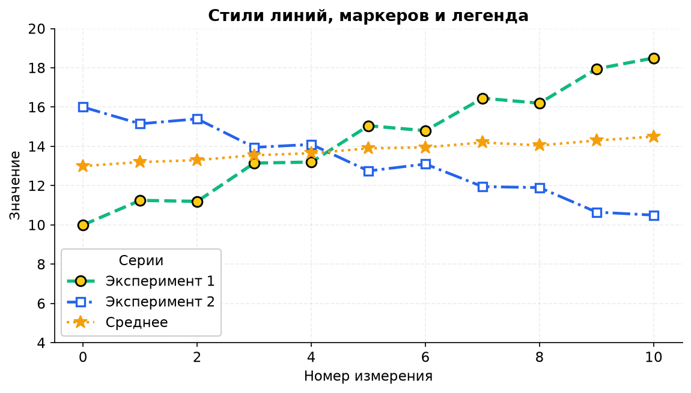
| Параметр | Значения / эффект |
|---|---|
color / c | Имя ("red"), hex ("#ef4444"), RGB/RGBA-кортеж или сокращение "r". |
lw / linewidth | Толщина линии в пунктах. Типично 1.5–3. |
ls / linestyle | "-" сплошная, "--" штриховая, "-." штрих-пунктир, ":" пунктир, (0, (5, 2)) — свой узор. |
marker | "o" круг, "s" квадрат, "^"/"v" треугольники, "D" ромб, "*" звезда, "X" крест, "P" плюс. |
ms / markersize | Размер маркера в пунктах. |
mfc / markerfacecolor | Цвет заливки маркера. "none" — пустой маркер. |
mec / markeredgecolor | Цвет контура маркера. |
mew / markeredgewidth | Толщина контура маркера. |
alpha | Прозрачность от 0 до 1. Помогает при наложении точек. |
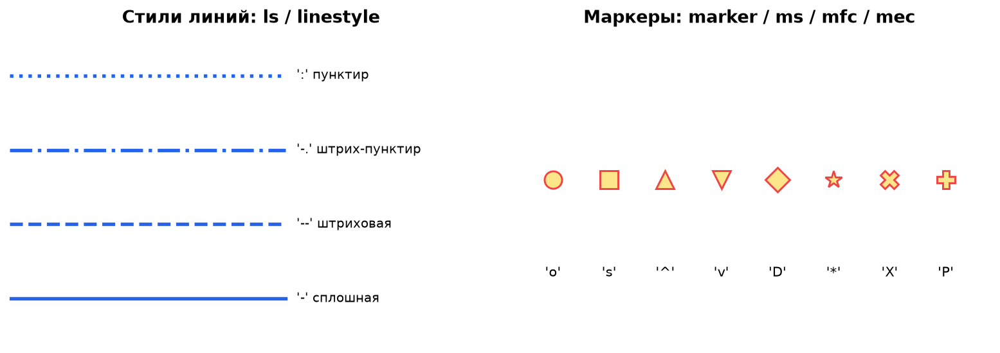
linestyle, справа — популярные marker.loc и bbox_to_anchorЛегенда появляется только у объектов с параметром label. Позиция loc может задаваться строкой или числом:
| Строка | Число | Позиция |
|---|---|---|
"best" | 0 | Автоматически ищет свободное место |
"upper right" | 1 | Верхний правый угол |
"upper left" | 2 | Верхний левый угол |
"lower left" | 3 | Нижний левый угол |
"lower right" | 4 | Нижний правый угол |
"right" | 5 | Справа снаружи |
"center left" | 6 | Слева по центру |
"center right" | 7 | Справа по центру |
"lower center" | 8 | Снизу по центру |
"upper center" | 9 | Сверху по центру |
"center" | 10 | По центру |
# Легенда за пределами осей: координаты в долях осей
ax.legend(bbox_to_anchor=(1.02, 1), loc="upper left")
# Несколько колонок и заголовок
ax.legend(ncol=2, title="Серии", fontsize=9)
# Легенда для конкретных художников
ax.legend(handles=[line1, line2], labels=["A", "B"])line, = ax.plot(...) с запятой распаковывает список из одного объекта Line2D. Это нужно, чтобы потом вызвать line.set_dashes() или line.set_color().
Масштаб оси задаётся методами set_xscale() и set_yscale(). Логарифмическая шкала не меняет данные — она меняет только способ отображения: равным расстояниям на экране соответствуют равные отношения значений, а не разности.
fig, axes = plt.subplots(1, 2, figsize=(10, 4))
x = np.linspace(1, 10, 200)
for ax in axes:
ax.plot(x, x**2, label="x²")
ax.plot(x, np.exp(x / 1.55), label="e^(x/1.55)")
ax.legend()
ax.grid(True, alpha=0.25)
axes[0].set_title("Обычная шкала")
axes[1].set_title("Логарифмическая шкала (Y)")
axes[1].set_yscale("log")
# Дополнительные настройки:
# ax.set_yscale("log", base=2) # логарифм по основанию 2
# ax.set_yscale("symlog", linthresh=1) # лог-шкала, терпимая к нулю
# ax.set_yscale("logit") # для вероятностей от 0 до 1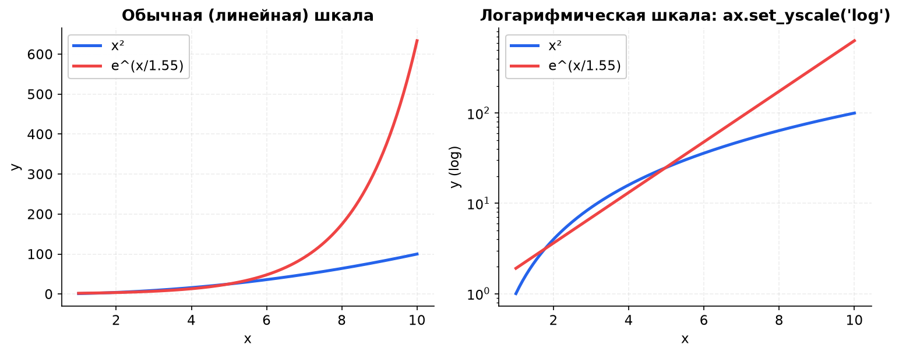
Если на оси есть нули или отрицательные значения, обычный log не сработает: Matplotlib либо выбросит предупреждение, либо обрежет такие точки. Варианты — ax.set_yscale("symlog"), ax.set_yscale("log", nonpositive="mask") (убрать неположительные точки) или предварительная фильтрация данных.
| Параметр | Что делает |
|---|---|
base | Основание логарифма: 10 по умолчанию, можно 2 или np.e. |
subs | Положение промежуточных засечек, например [2, 5] для десятков. |
nonpositive | "clip" (обрезать) или "mask" (скрыть) для нулей и отрицательных значений. |
minor | Включает/выключает мелкие засечки: ax.minorticks_on() или ax.minorticks_off(). |
Положение и подписи засечек задаются явно. В подписях можно использовать mathtext — облегчённый LaTeX, встроенный в Matplotlib. Строки с формулами пишите как raw string: r"$\alpha$", иначе обратный слэш может быть воспринят как escape-последовательность.
ax.set_xticks([1, 2, 3, 4, 5])
ax.set_xticklabels(
[r"$\alpha$", r"$\beta$", r"$\gamma$", r"$\delta$", r"$\epsilon$"],
fontsize=17
)
yticks = [0, 2, 4, 6, 8, 10]
ax.set_yticks(yticks)
ax.set_yticklabels([f"{y:.1f}" for y in yticks], fontsize=12)
# То же самое, но с формулой в каждой подписи:
# ax.set_yticklabels([rf"${y:.1f}$" for y in yticks], fontsize=12)
# Настройка самих засечек
ax.tick_params(axis="both", which="major", direction="out",
length=5, width=1, labelsize=11, pad=6)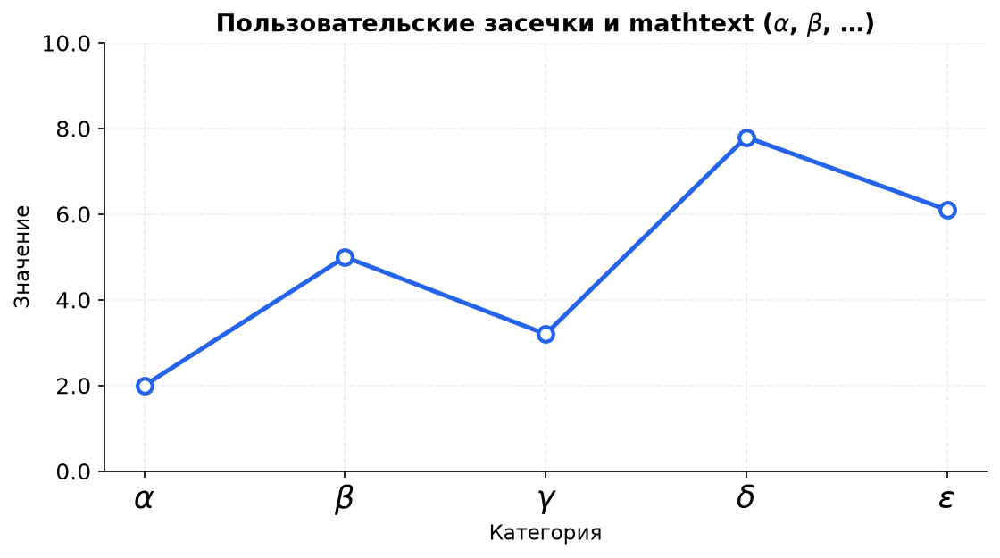
Параметр tick_params | Что делает |
|---|---|
axis | "x", "y" или "both" — к какой оси применить настройки. |
which | "major", "minor" или "both". |
direction | "out", "in" или "inout" — куда смотрят засечки. |
length, width | Длина и толщина засечек в пунктах. |
pad | Отступ подписи от засечки. |
labelsize, colors | Размер и цвет подписей/засечек. |
rotation | Поворот подписей, например 45 для длинных категорий. |
$...$ — без MathJax она останется текстом. В этом конспекте формулы в тексте оформлены обычным HTML (Unicode, <sub>, <sup>), а $...$ используется только внутри Python-кода, где его обрабатывает Matplotlib.
ScalarFormatter умеет выносить общий порядок величины в множитель над осью. Параметр set_powerlimits((m, n)) означает: использовать научную нотацию, если показатель степени меньше m или больше n.
from matplotlib import ticker
formatter = ticker.ScalarFormatter(useMathText=True)
formatter.set_scientific(True)
formatter.set_powerlimits((-2, 2)) # 10^-2 ... 10^2 показываем без выноса
ax.yaxis.set_major_formatter(formatter)
# Короткая альтернатива для всей оси:
# ax.ticklabel_format(style="sci", axis="y", scilimits=(-2, 2))
# Отступы подписей осей от чисел
ax.xaxis.labelpad = 8
ax.yaxis.labelpad = 8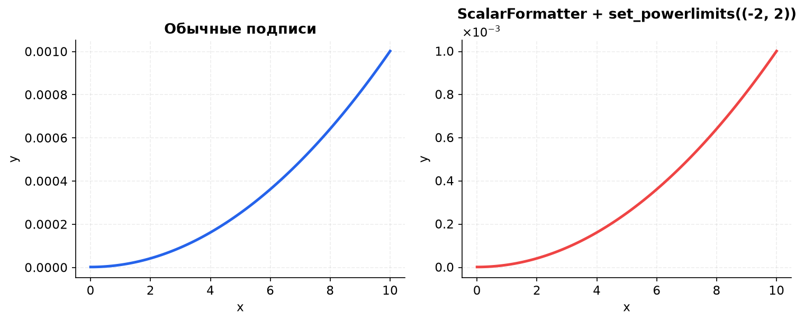
Параметр useMathText=True рисует множитель в стиле mathtext, а labelpad задаёт отступ подписи оси от самих чисел в пунктах. Если подпись «прилипает» к цифрам, увеличьте labelpad до 8–12.
ax.spines["right"].set_visible(False)
ax.spines["top"].set_visible(False)
# Привязка оси X и Y к координате 0
ax.xaxis.set_ticks_position("bottom")
ax.spines["bottom"].set_position(("data", 0))
ax.yaxis.set_ticks_position("left")
ax.spines["left"].set_position(("data", 0))
# Другие варианты привязки:
# ax.spines["left"].set_position(("axes", 0.5)) # середина осей
# ax.spines["bottom"].set_position(("outward", 10)) # наружу на 10 pt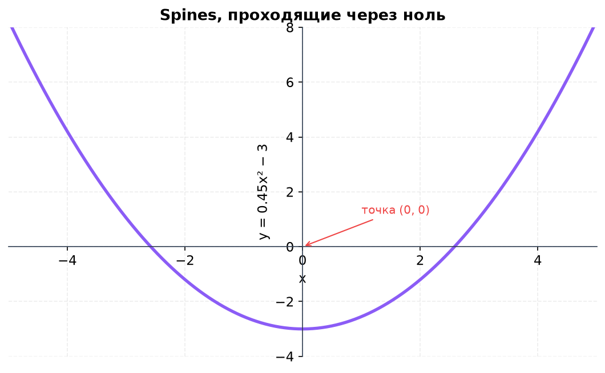
spines сдвинуты в точку (0, 0): график становится похож на школьную систему координат.fig, ax1 = plt.subplots(figsize=(7, 4))
ax1.plot(x, 0.5 * x**2, color="blue")
ax1.set_ylabel("Площадь, м²", color="blue")
ax1.tick_params(axis="y", colors="blue")
ax2 = ax1.twinx() # вторая ось Y, общая ось X
ax2.plot(x, 0.12 * x**3, color="red")
ax2.set_ylabel("Объём, м³", color="red")
ax2.tick_params(axis="y", colors="red")
# Чтобы правая рамка была видна и окрашена:
ax2.spines["right"].set_visible(True)
ax2.spines["right"].set_color("red")
# Легенды у каждой оси отдельно
ax1.legend(loc="upper left")
ax2.legend(loc="lower right")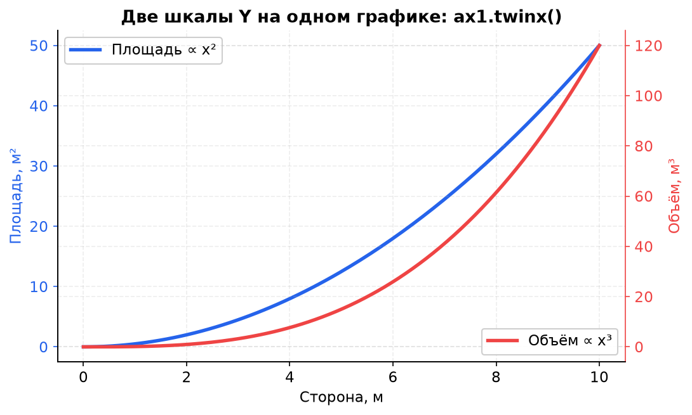
ax1.twinx() создаёт вторую ось Y с независимым масштабом. Цвета линий и подписей помогают понять, к какой оси относится каждая серия.twinx(): когда две величины имеют разные единицы измерения или сильно разный масштаб, но зависят от одного x. Не используйте две шкалы Y, если величины сопоставимы — это затрудняет сравнение. И не забывайте, что ax1 и ax2 — разные объекты: подписи, легенды и пределы задаются у каждого отдельно.
# Различные 2D-методы:
ax.scatter(x, y, s=50, c=y, cmap="viridis", alpha=0.8)
ax.step(n, n**2, where="mid", lw=2)
ax.bar(categories, values, width=0.6, align="center")
ax.fill_between(x, x**2, x**3, color="green", alpha=0.4)
# Текст в координатах данных:
ax.text(0.15, 0.2, r"$y = x^2$", fontsize=18, color="blue")
# Текст в долях осей + стрелка:
ax.annotate(
"максимум",
xy=(2.0, 4.0), # куда указывает стрелка (данные)
xytext=(0.55, 0.85), # где стоит текст (доли осей)
textcoords="axes fraction",
arrowprops=dict(arrowstyle="->", color="red"),
color="red"
)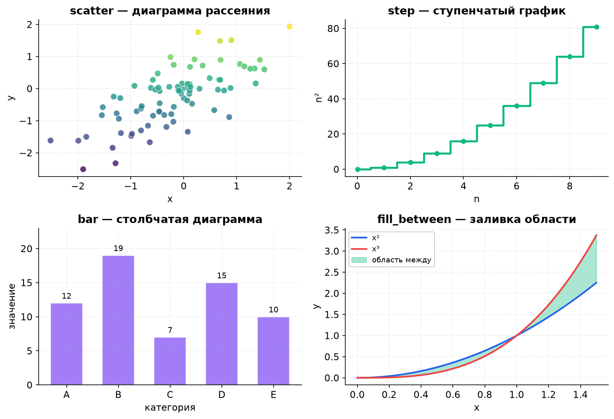
| Метод | Для чего | Ключевые параметры |
|---|---|---|
scatter | Связь двух числовых величин, цвет/размер как третья переменная. | s, c, cmap, alpha, edgecolors, linewidths |
step | Ступенчатое изменение: тарифы, интервалы, накопленные значения. | where="pre" | "mid" | "post", lw, color |
bar | Сравнение категорий. | width, bottom, align, color, edgecolor, label |
barh | Горизонтальные столбцы — удобно для длинных названий категорий. | height, left, align |
fill_between | Заливка области между двумя кривыми или между кривой и уровнем. | alpha, where, interpolate, color |
hist | Распределение одной величины. | bins, density, cumulative, histtype |
errorbar | Точки с погрешностями. | yerr, xerr, capsize, fmt |
GridSpec позволяет задавать сетку с разными пропорциями строк и столбцов и объединять ячейки. Это удобнее, чем вручную подбирать координаты add_axes.
import matplotlib.gridspec as gridspec
fig = plt.figure(figsize=(9, 5.5))
gs = gridspec.GridSpec(
2, 3,
figure=fig,
height_ratios=[2, 1], # верхняя строка в 2 раза выше
width_ratios=[1, 2, 1], # средний столбец в 2 раза шире
hspace=0.45, # вертикальный отступ
wspace=0.35 # горизонтальный отступ
)
for g in gs:
ax = fig.add_subplot(g)
# ... настройка каждого ax
# Объединение ячеек:
ax_top = fig.add_subplot(gs[0, :]) # вся верхняя строка
ax_left = fig.add_subplot(gs[1, 0])
ax_right = fig.add_subplot(gs[1, 1:])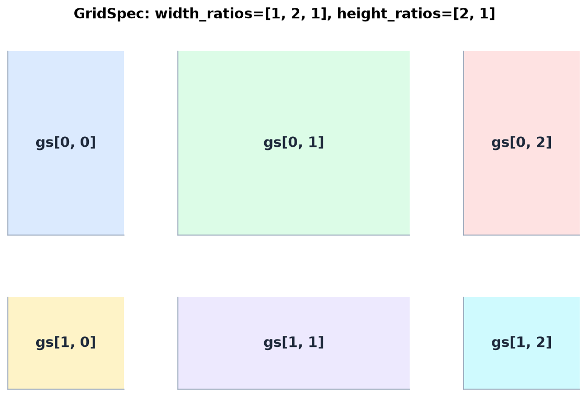
height_ratios=[2, 1] и width_ratios=[1, 2, 1]: верхняя строка выше, средний столбец шире. Каждая панель подписана своим индексом gs[строка, столбец].subplot2grid: объединение ячеек без отдельного объекта GridSpecax1 = plt.subplot2grid((3, 3), (0, 0), colspan=3) # верхняя строка
ax2 = plt.subplot2grid((3, 3), (1, 0), colspan=2) # две ячейки в середине
ax3 = plt.subplot2grid((3, 3), (1, 2), rowspan=2) # правая колонка на 2 строки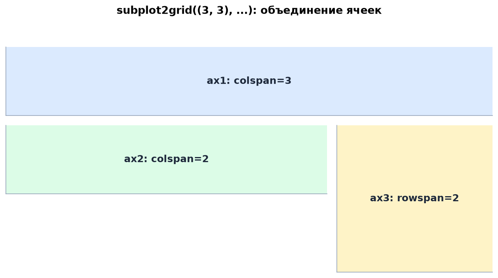
colspan растягивает axes по горизонтали, rowspan — по вертикали. Координаты задаются в формате (строка, столбец).subplot_mosaicС версии Matplotlib 3.3 есть plt.subplot_mosaic(): вы рисуете раскладку как список списков с именами панелей, а получаете словарь axd. Это самый читаемый способ для нестандартных макетов.
fig, axd = plt.subplot_mosaic(
[["left", "right"],
["bottom", "bottom"]],
figsize=(9, 5),
layout="constrained"
)
axd["left"].plot(x, np.sin(x))
axd["right"].scatter(x, y)
axd["bottom"].bar(categories, values)
# Пустая ячейка обозначается точкой:
# [["left", "."], ["bottom", "bottom"]]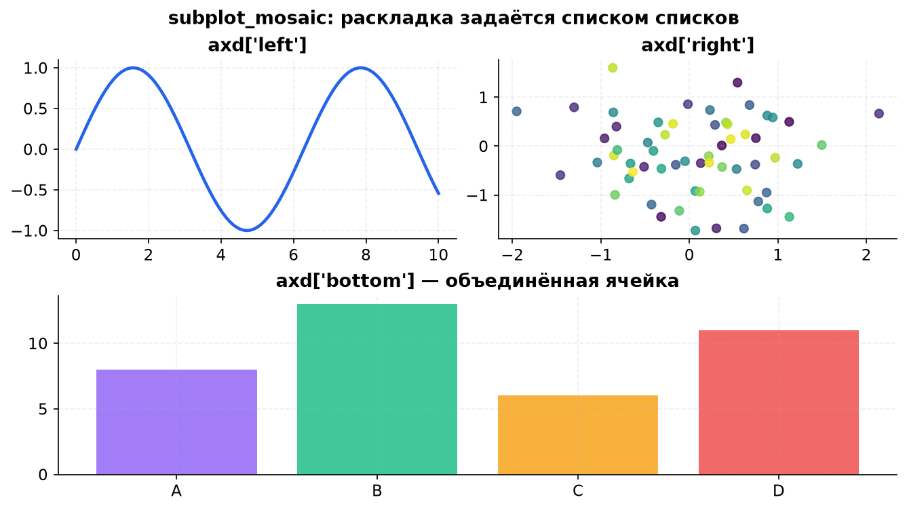
subplot_mosaic: имена панелей сразу становятся ключами словаря axd, а объединение ячеек задаётся повторением имени.Качество итоговой картинки зависит не только от кода построения, но и от параметров сохранения.
fig.savefig(
"figure.png",
dpi=300, # разрешение для печати
bbox_inches="tight", # обрезать лишние поля
pad_inches=0.05, # небольшой отступ вокруг
facecolor="white", # цвет фона
transparent=False, # True — прозрачный фон (для PNG)
metadata={"Author": "..."} # метаданные (для PDF/SVG)
)
# Векторные форматы для статей и презентаций:
fig.savefig("figure.svg")
fig.savefig("figure.pdf")| Формат | Когда использовать | Особенности |
|---|---|---|
PNG | Экран, презентации, веб. | Растровый, поддерживает прозрачность. Для печати нужно dpi=300. |
SVG | Веб и редактируемая графика. | Векторный, масштабируется без потерь, открывается в Illustrator/Inkscape. |
PDF | Статьи, отчёты, LaTeX. | Векторный, удобен для вставки в документы. |
EPS | Полиграфия и старые редакторы. | Векторный, но менее удобен, чем PDF/SVG. |
tight_layout() или layout="constrained" вызваны до savefig().savefig() стоит до show(), иначе можно сохранить пустой холст.plt.close(fig), иначе память будет расти.r"$...$" и проверяйте, что mathtext корректно отображается.plt.plot. Если график пойдёт в отчёт, статью или презентацию — сразу стройте через fig, ax = plt.subplots(), задавайте figsize, dpi и сохраняйте в PNG/SVG с bbox_inches="tight".